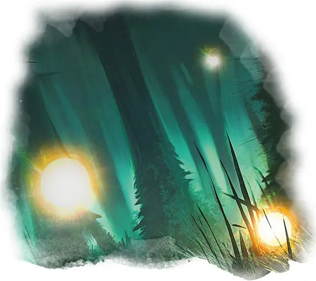

Блуждающий огонёк
Will-o’-wisp
Крошечная Нежить, хаотично-злая

Класс Доспеха 19
Хиты 22 (9к4)
Скорость 0 футов, летая 50 футов (парит)
| мод | спас | ||
|---|---|---|---|
| СИЛ | 1 | −5 | −5 |
| ЛОВ | 28 | +9 | +9 |
| ТЕЛ | 10 | +0 | +0 |
| мод | спас | ||
|---|---|---|---|
| ИНТ | 13 | +1 | +1 |
| МДР | 14 | +2 | +2 |
| ХАР | 11 | +0 | +0 |
Сопротивление урону звук, кислота, некротическая энергия, огонь, холод; дробящий, колющий, рубящий от немагических атак
Иммунитет к урону электричество, яд
Иммунитет к состояниям сбивание с ног, паралич, отравление, опутанность, истощение, захват, бессознательность
Чувства тёмное зрение 120 футов, пассивное Восприятие 12
Языки все, известные при жизни
Опасность 2 (450 опыта)
Бонус мастерства +2
Среда обитания Болото, Город, Лес
Особенности
Истребление жизни. Блуждающий огонёк может бонусным действием нацелиться на одно существо, которое видит в пределах 5 футов, у которого при этом 0 хитов, и которое все ещё живо. Цель должна преуспеть в спасброске Телосложения Сл 10 от этой магии, иначе умрет. Если цель умирает, блуждающий огонек восстанавливает 10 (3к6) хитов.
Эфемерность. Блуждающий огонёк не может ничего носить и нести.
Бестелесное перемещение. Блуждающий огонёк может перемещаться сквозь других существ и предметы, как если бы они были труднопроходимой местностью. Он получает 5 (1к10) урона силовым полем, если оканчивает ход внутри предмета.
Переменное свечение. Блуждающий огонёк испускает яркий свет в радиусе от 5 до 20 футов и тусклый свет в пределах ещё такого же количества футов. Блуждающий огонёк может изменять радиус бонусным действием.
Действия
Шок. Рукопашная атака заклинанием: +4 к попаданию, досягаемость 5 футов, одно существо. Попадание: 9 (2к8) урона электричеством.
Невидимость. Блуждающий огонёк и его свет магическим образом становятся невидимыми, пока он не совершит атаку, не использует «Истребление жизни», или пока не прервётся его концентрация (как при концентрации на заклинании).
Описание
Блуждающие огоньки являются злобными, похожими на дымку, шарами света, которые обитают в уединенных местах и на полях сражений, связанных с мрачной судьбой или темной магией, и питаются страхом и отчаянием.
Надежда и обречение. Издали блуждающие огоньки выглядят как свет раскачивающегося фонаря, хотя они могут менять свой цвет и уменьшать яркость до минимума. Активируя свой свет, блуждающие огоньки внушают надежду, намекая на безопасность существам, которые следуют за ними.
Блуждающие огоньки заманивают опрометчивых созданий в ямы с зыбучим песком, убежища чудовищ и другие опасные места, чтобы кормиться страданиями своей жертвы и наслаждаться её предсмертными криками. Злое существо, которое стало жертвой блуждающего огонька, тоже может стать огоньком, и его несчастный дух материализуется над его бездыханным трупом подобно мерцающему пламени.
Поглощенные отчаянием. Блуждающие огоньки являются душами злых существ, которые погибли в мучениях или страданиях, поскольку они блуждали по покинутым местам, пропитанным могущественной магией. Они появляются в болотистых трясинах и полях сражений, усыпанных костями, где угнетающее настроение насыщеннее и тяжелее, чем густой туман и мгла. Заточенные в этих заброшенных местах потерянных надежд и воспоминаний, блуждающие огоньки приманивают других созданий, и питаются страданиями путников.
На службе зла. Блуждающие огоньки редко разговаривают, однако если говорят, то их голос звучит как далекий шепот. В скверных местах, в которых они обитают, блуждающие огоньки иногда образуют симбиотические отношения с опасными соседями. Карги, они, чёрные драконы и злобные культисты используют блуждающих огоньков для заманивания существ в засаду. И пока злобные союзники истребляют созданий, которых они окружили, огоньки, паря над ними, питаются агонией умирающих тел.
Натура нежити. Блуждающему огоньку не нужен воздух, еда, питье и сон.